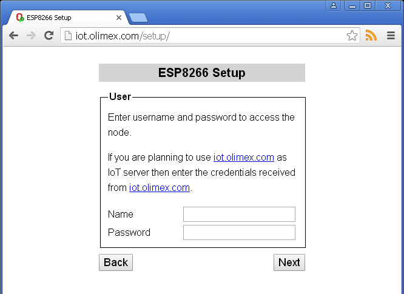

Back to OlimexIoT Help
Before you proceed make sure that your node uses our IoT Firmware and that it is reset to factory default settings. Otherwise the setup will not be able to access and configure the node.
Open your browser and navigate to http://iot.olimex.com/setup
If you are using a mobile device you can use Add to Home screen in order to have the HTML5 application available even when you are not online.
Connect your WiFi to the node's Access Point. Password is olimex-ap
After the connection is established click Next Button
Fill in your OlimexIoT Service username and password.
Choose a descriptive name for your node and set it as SSID.
Fill in your existing WiFi network credentials.
To use our free service for Server choose iot.olimex.com.
Make sure SSL is checked.
If you are using your own server enter its name or IP address.
Confirm the settings.
Done.
Continue with Node monitoring or Node management
Back to OlimexIoT Help